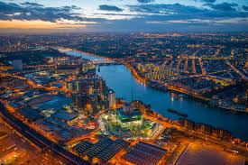

MAN'S BESTFRIEND; THE DOG.
It is believed that man's most faithful and loyal friend is the dog.
As you can guess, my pet is obviously dog. His name is Coco.
He is a golden retriever.
His favourite toy is a chew-toy which is in the shape of a bone.
Coco is actually 5 years old which is a striking 40 years in dog years!
The age of a dog actually varies due to the type of breed and its size.
During his stay with us Coco has been very strong and healthy since birth due to the frequent visits to the vet.
He was vaccinated against diseases such as; Canine distemper and canine parovirus which can be fatal.
He feeds regularly on meat,bones and dog food.
Just as a human baby requires food and care, so does a dog.
MY FAVOURITE THINGS
Usually everyone does things ocassionally but there are others one does more often as they tend to enjoy them more.
These activities which tend to be done more often and become one's favourite.
My favourite things to do are;
- Photgraphy
- Riding bikes etc.


Furthermore i've recently added coding to the list of one of my favourite things to do.
It was a bit challenging at first but now is really enjoyable especially when one gets the hang of things.
Moreover during my free time, I like doing community projects such as; going to assist in children homes and also plantng trees to save the environment
LIFE THROUGH A LENS
For most people a camera might just be an ordinary machine or object used for fun and taking photos and videos.
Technically, they are not wrong, but in my opinon there's more to a camera than just a "machine" or an "ordinary object"
To me a camera is like a magical portal to another dimension. Through a lens, there's a differnt world which lies out there.
The peace that the world brings is unimagineable. It's as if your third eye has been opened to view the world differently
In conclusion, the camera does not only take photos and videos but also lots of memories
Photos can differ from each other. They include:
- portrait photography
- aerial photography
- wildlife phtography
- event photography just to mention but a few
PORTRAIT PHOTOGRAPHY
A portrait is a photo of a persom or a group of people that captures the personality of the subject by using effective lighting,backdrops and projects
This is shown below.

AERIAL PHOTOGRAPHY
This is the taking of photographs from an aircraft or a flying object.
Platforms for aerial photography include: drones, helicopters, stand alone telescoping and many others
WILDLIFE PHOTOGRAPHY
Wildlife photography is a genre of photography concerned with documenting various forms of wildlife in their natural habitat
Such photos are include the one below

EVENT PHOTOGRAPHY
This is usually capturing memories and events at a particular ceremony or event.
This may include events such as weddings, birthdays, parties and other social gatherings.
There are many other types of photographs other than those presented here.
All that matters in the end is the quality of the photo and the memories captured rather than the type.